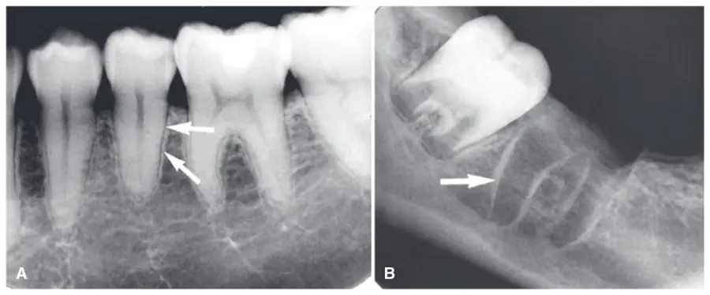
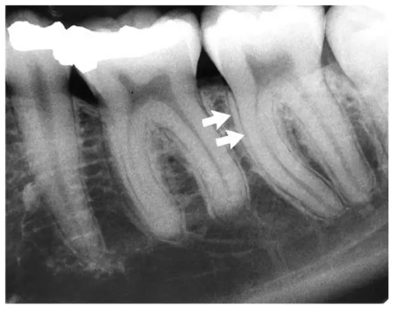

نسخه استخراجشده؛ ترجمه یا تأیید علمی انجام نشده است. وضعیت: captured
دو نفر یک پریاپیکال را میبینند. یکی میگوید «لامینا دورا در دیستال قطع شده، ضایعه دارد». دیگری میگوید «طبیعی است». چه کسی راست میگوید؟ جواب به زاویهی پرتو بستگی دارد، نه به بافت.

اول تعریف: رادیوگرافی دندانهای سالم نشان میدهد که ساکتهای دندانی با «یک لایهی نازک رادیواوپک از استخوان متراکم» احاطه شدهاند. نامش — لامینا دورا یعنی «لایهی سخت» — «از ظاهر رادیوگرافیاش گرفته شده است».
و اینجا بیشترین بدفهمی رخ میدهد: این لایه «فقط کمی ضخیمتر و با همان رادیودنسیتیِ ترابکولهای استخوان کنسلوس آن ناحیه است». پس لامینا دورا مادهی متراکمتری نیست؛ ظاهر روشنش «ناشی از این واقعیت است که پرتو ایکس بهصورت مماسی از چندین برابرِ ضخامتِ آن دیوارهی نازک استخوانی میگذرد» — چیزی که «اثر پوستهی تخممرغ» (eggshell effect) نامیده میشود.
و منشأ تکاملیاش: لامینا دورا «امتدادی از پوشش کریپت استخوانی است که در دوران تشکیل، هر دندان را احاطه میکرده». همچنین با سایهی استخوان کورتیکال در کرست آلوئولار پیوسته است.
حالا وابستگی به زاویه — همان چیزی که دعوای دو نفر اول را حل میکند: «وقتی پرتو ایکس از گسترهی نسبتاً بلندی از این ساختار میگذرد، لامینا دورا رادیواوپک و واضح دیده میشود. وقتی پرتو مایلتر هدایت شود، لامینا دورا منتشرتر به نظر میرسد و ممکن است اصلاً قابل تشخیص نباشد.» لامینا دورایِ پهن و صاف و موازی با پرتو برجسته میشود؛ لامینا دورایِ خمیده و باریک کمتر دیده میشود.
و واقعیتی که باید بپذیری: «در واقع، حتی اگر استخوان نگهدارنده در یک قوس سالم دستنخورده باشد، شناسایی لامینا دورایی که کاملاً دور هر ریشه در هر کلیشه را گرفته باشد، مکرراً دشوار است.»
ارزش تشخیصی و حدش، در دو جمله: «وجود یک لامینا دورای دستنخورده پیرامون آپکس دندان، قویاً به حیات پالپ اشاره میکند.» ولی «به دلیل ظاهر متغیر لامینا دورا، غیبت تصویرش پیرامون یک آپکس میتواند نرمال باشد». و بهندرت، لامینا دورا میتواند در ریشهی مولری که به سینوس ماگزیلاری امتداد یافته، در غیاب هر بیماری غایب باشد. پس هرگز فقط بر پایهی لامینا دورا تشخیص نگذار.
و دو علت دیگر برای گسیختگیهای کوچک: «سوپرایمپوزیشن استخوان کنسلوس» و «کانالهای نوترینت کوچک که از فضاهای مغز استخوان به لیگامان پریودنتال میروند».
و اثر عملکرد: ضخامت و دانسیتی لامینا دورا با میزان استرس اکلوزال تغییر میکند — «ضخیمتر و اوپکتر پیرامون ریشهی دندانهای در اکلوژن سنگین، و نازکتر و کمتراکمتر پیرامون دندانهایی که عملکرد اکلوزال ندارند».
یک نوار تاریکِ باریک میان ریشه و لامینا دورا. علتش ساده است: «چون لیگامان پریودنتال عمدتاً از کلاژن تشکیل شده، بهصورت یک فضای رادیولوسنت بین ریشهی دندان و لامینا دورا دیده میشود».

مسیرش را دقیق بدان: این فضا «از کرست آلوئولار آغاز میشود، پیرامون بخشهایی از ریشه که درون آلوئولاند امتداد مییابد، و در سمت مقابل دندان به کرست آلوئولار برمیگردد».
و پهنایش یکنواخت نیست — این را با هم حفظ کن: پهنای PDL «میان افراد، از دندانی به دندان دیگر در یک فرد، و حتی از نقطهای به نقطهی دیگر پیرامون یک دندان» متفاوت است. الگوی معمول: «در میانهی ریشه نازکتر و نزدیک کرست آلوئولار و آپکس ریشه کمی پهنتر».
و از این الگو یک نتیجهی مکانیکی به دست میآید: این توزیع «نشان میدهد که تکیهگاه (فولکروم) حرکت فیزیولوژیک دندان در ناحیهای است که PDL نازکترین پهنا را دارد».
یک رابطهی یکطرفه که زیاد اشتباه فهمیده میشود: ضخامت لیگامان به درجهی عملکرد مربوط است، چون «PDL پیرامون ریشهی دندانهای مدفون و دندانهایی که آنتاگونیست خود را از دست دادهاند، نازکترین حالت را دارد». ولی بلافاصله باید افزود: «عکسش درست نیست — فضای محسوساً پهنتر بهطور منظم در افراد با اکلوژن سنگین یا براکسیزم مشاهده نمیشود.» یعنی از یک PDL پهن نتیجه نگیر که بیمار براکسیزم دارد.
و فریب دوتایی: «شکل دندان میتواند ظاهر یک فضای PDL دوتایی بسازد. وقتی پرتو ایکس چنان هدایت شود که دو تحدب از سطح ریشه روی کلیشه بیفتد، فضای PDL دوتایی دیده میشود.»
و محل کلاسیکش را حفظ کن، چون سؤال از همینجا میآید: «مثال شایع فضای PDL دوتایی، در برجستگیهای باکال و لینگوالِ سطح مزیالِ ریشهی مولر اول و دوم مندیبل دیده میشود.» علتش دو ارتفاع کانتور در سطح پروگزیمالِ محدبِ ریشه است — یعنی یک واریاسیون هندسی، نه یک ضایعه و نه یک ریشهی اضافه.